Research & Projects
My research spans quantum optics, computational imaging, compressive sensing, and quantum optomechanics. Click any card to read the full description.
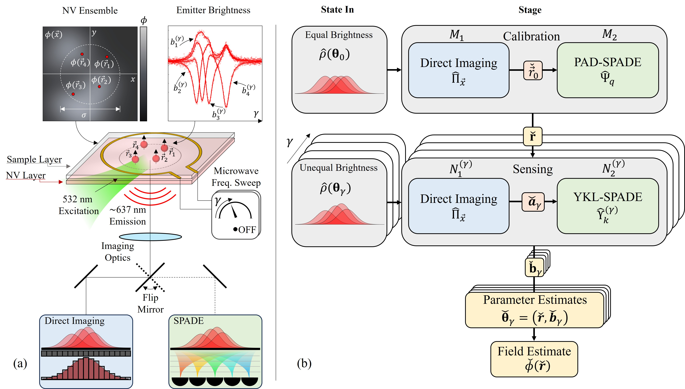
Superresolution Quantum Sensing

Quantum Limits of Exoplanet Discovery
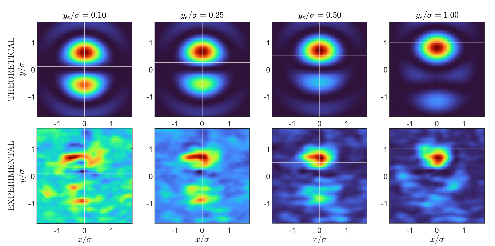
Quantum-Optimal Coronagraph
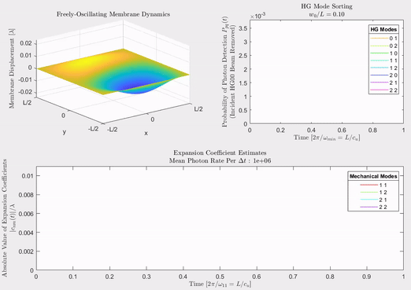
Imaging-Based Quantum Optomechanics

Multi-Aperture Quantum Imaging
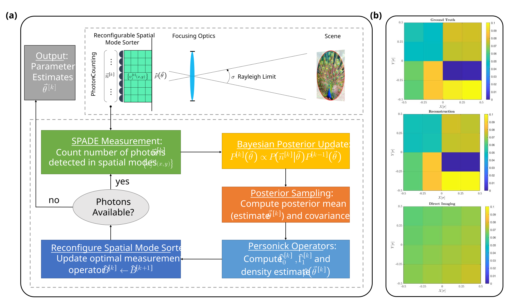
Compressive Quantum Imaging
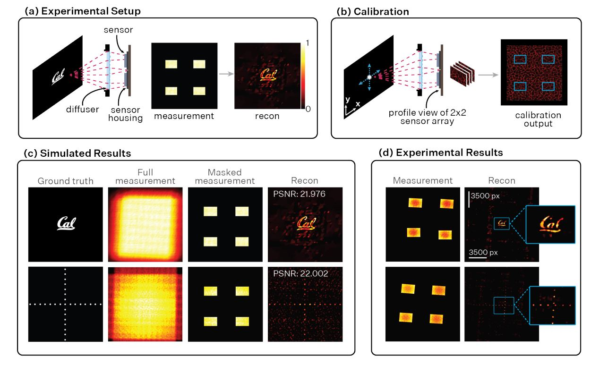
Multi-Sensor DiffuserCam
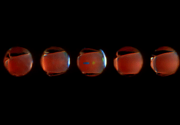
MagLev Density Measurement
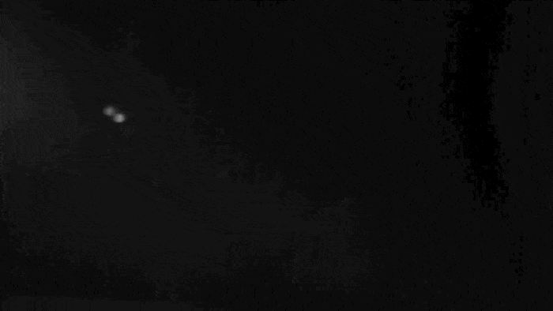
Aeromechanics of Jumping Crickets
Programs and algorithms built in free time spanning computational graphics, fluid dynamics, aircraft design, and signal processing.
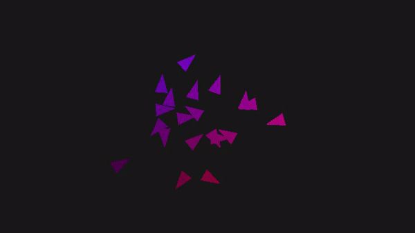
Boids Algorithm
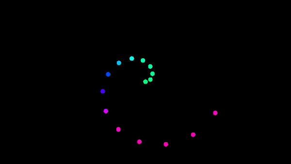
2D N-Body Gravity Simulator

Voronoi Tessellation
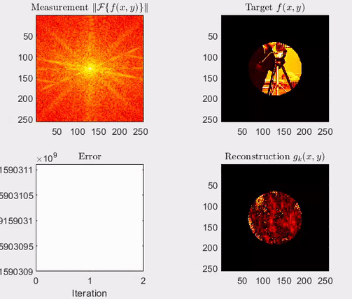
HIO Phase Retrieval

E-VTOL Aircraft Design

Mandelbrot Set Explorer

Background-Oriented Schlieren
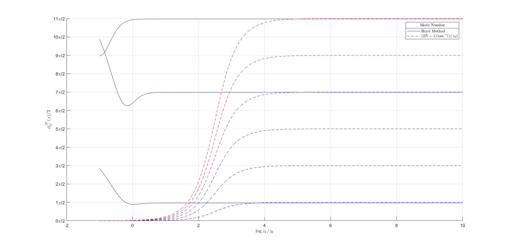
Gouy Phase for HG Modes
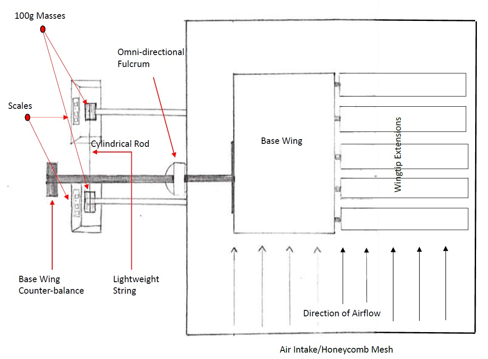
Bio-Inspired Wing Design
Final projects from graduate and undergraduate courses spanning physics, computer science, and optical sciences.

Bubble Simulator
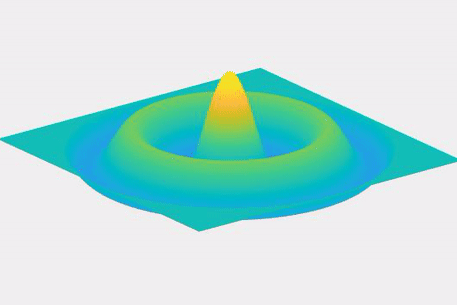
Cymatics and Waves
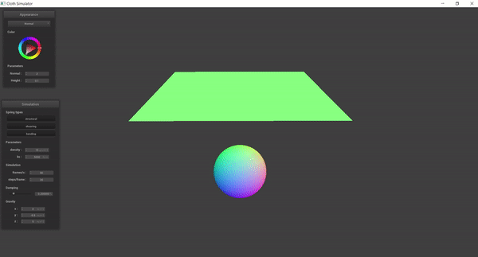
Cloth Simulator
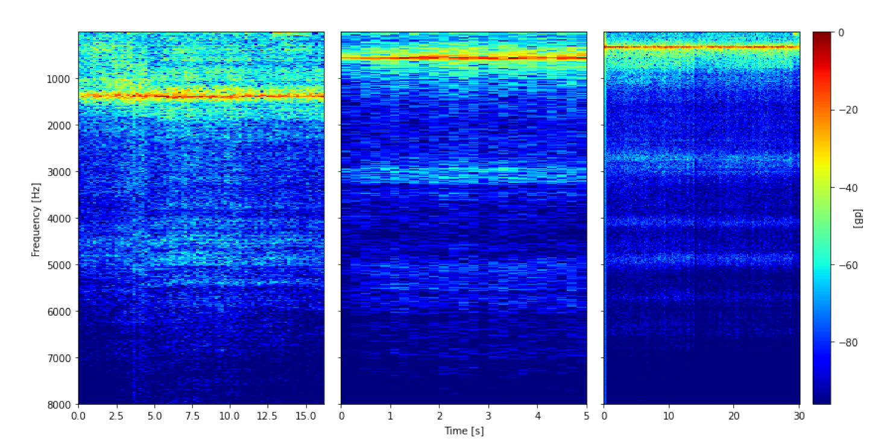
Helmholtz Resonator
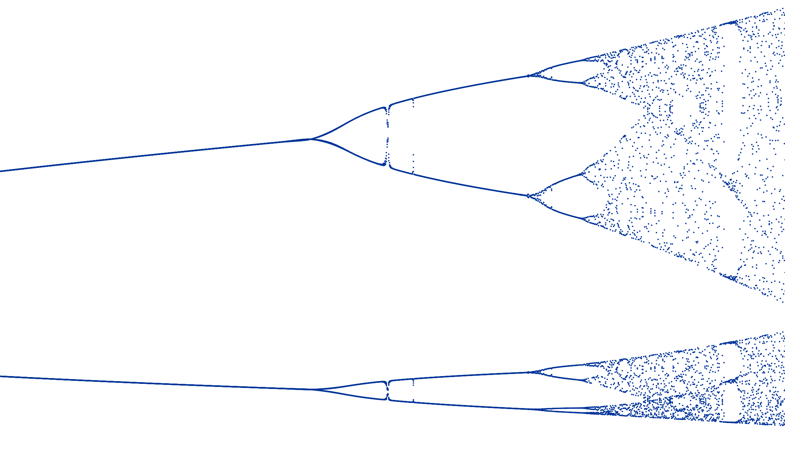
Nonlinear Dynamics and Chaos
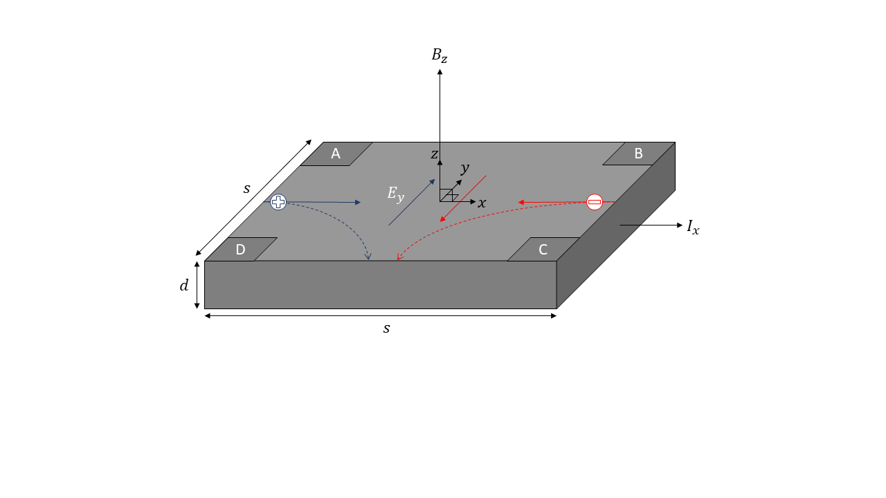
Semiconductor Hall Effect
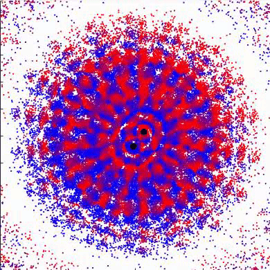
Quantum Super-Resolution
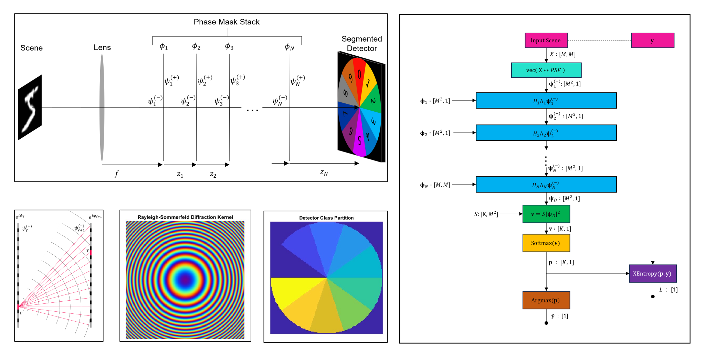
Diffractive Neural Networks
Patented inventions spanning optical metrology, photonic integrated circuits, and UV decontamination systems.
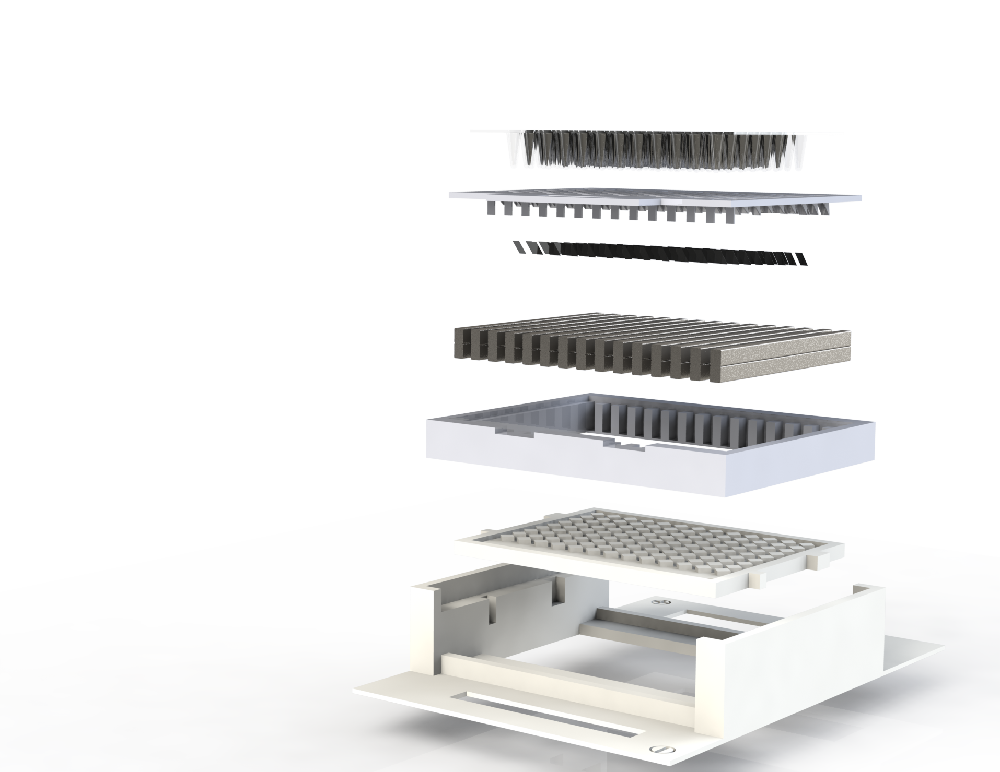
Sample Measurement with Mirrors
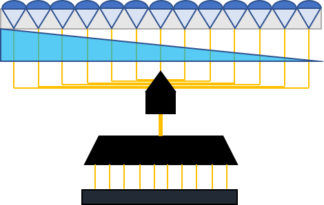
PIC-Based Interferometric Transceiver
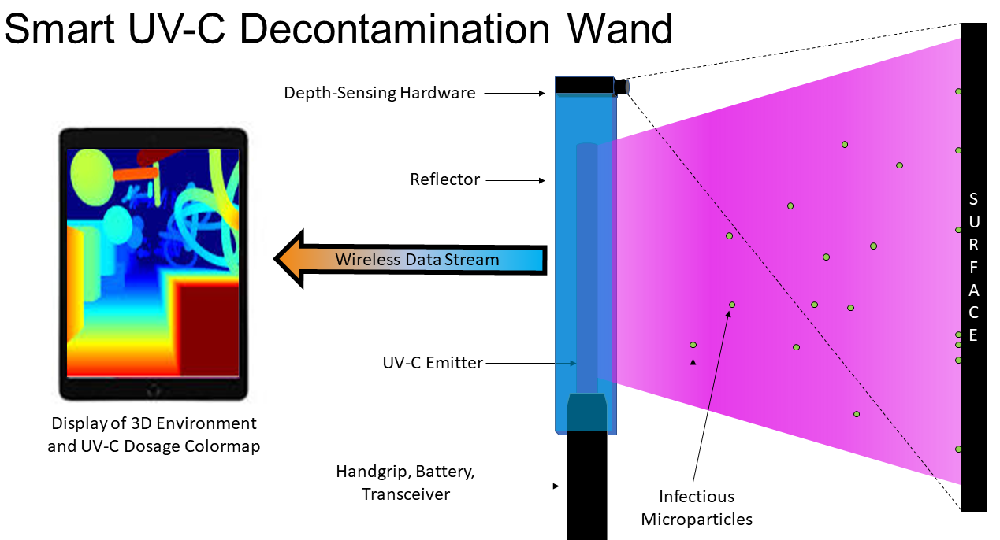